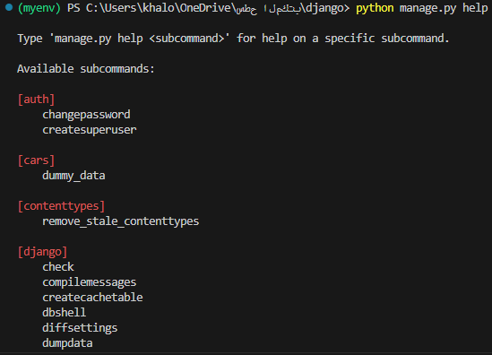
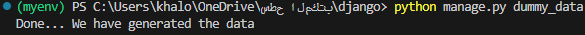

--Commands--

we use command to create data in database before run the website.
sometimes you want to have dummy data to watch data in database, command acheive that.
if you delete your database, all data will be deleted. to create dummy data.
you need to create it manually. if you build your command. you can run it again to have dummy data.
you can create and run commands by using the manage.py

Model:
class Client(models.Model):
    name = models.CharField(max_length=100, verbose_name='Name')
    email = models.EmailField(unique=True)

class Car(models.Model):
    title = models.CharField(max_length=100, verbose_name='Title')
    client = models.ForeignKey(Client, on_delete=models.CASCADE)

create management folder then create commands folder.
create python file and name it whateven you want.


insert following codes in your command file:
from django.core.management import BaseCommand
from app.models import Car, Client

class Command(BaseCommand):
    help = "Generate Data"
    # help message indecate about command content

    # put your logic in handle function
    def handle(self, *args, **options):
        """
        Create Clients
        """
        client1 = Client.objects.create(name='Mohammed', email="mohammed_alshammi@gmail.com")
        client2 = Client.objects.create(name='Ahmed', email="ahmed_laila@gmail.com")
        client3 = Client.objects.create(name='Amal', email="amal_sami@gmail.com")
        client4 = Client.objects.create(name='Maher', email="maher_hassan@gmail.com")

        """
        Create Cars
        """
        Car.objects.create(title="BMW", client=client1)
        Car.objects.create(title="Hyundai", client=client1)
        Car.objects.create(title="Chevrolet", client=client2)
        Car.objects.create(title="Ford", client=client3)
        Car.objects.create(title="Toyota", client=client4)

        If the command was executed successfully, the following message will appear.
        self.stdout.write("Done... We have generated the data")


display the help message:
python manage.py help


run your command:
python manage.py command name

successful message:
